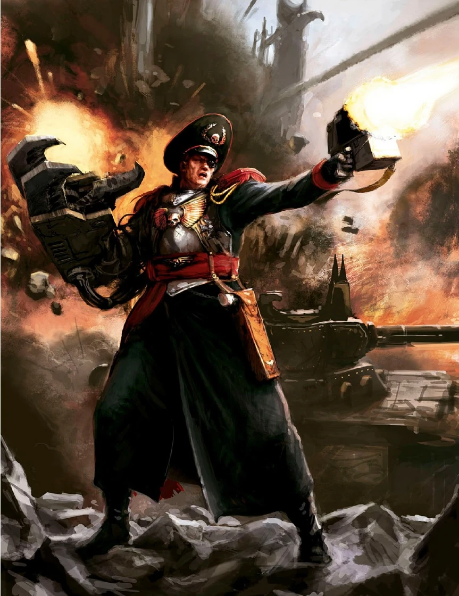

| Name | Age | Sex | Skin Color | Eyes Color | Vehicle |
|---|---|---|---|---|---|
| Sebastian Yarrick | Unknown (Legendary) | Male | Pale / Scarred | One Blue / One Red (Bale Eye) | Baneblade (Fortress of Arrogance) |
Sebastian Yarrick was born on the penal world of Salvar, a harsh environment that forged his iron will. After the loss of his parents in the Emperor's service, he was inducted into the Schola Progenium. Unlike his peers, Yarrick showed a unique aptitude for Xenos linguistics, specifically the guttural tongue of the Orks. He understood early on that to defeat the greenskin, one must understand their primitive psychology and superstitions. This insight would later become his most potent weapon in the defense of the Imperium.
When the Ork Warlord Ghazghkull Mag Uruk Thraka first invaded Armageddon, the planetary governor's incompetence threatened to doom the world. Yarrick, then a senior Commissar, took command of the defenses at Hades Hive. He transformed the hive into a fortress of defiance, stalling the Ork advance for months. It was during this siege that Yarrick engaged a massive Warboss in single combat. Despite losing his right arm to a Power Klaw, Yarrick decapitated the beast and claimed the Xenos weapon as his own. His refusal to fall inspired the defenders to hold until Imperial reinforcements arrived.
Following the Second War, Yarrick pursued Ghazghkull to the world of Golgotha. In a rare tactical oversight, the Imperial forces were ambushed, and Yarrick was captured. In a testament to his legendary status, Ghazghkull did not execute him immediately. Instead, Yarrick was subjected to the Orks' brutal "entertainment" before staging a miraculous escape. This event solidified the Orks' belief that Yarrick was an immortal "spirit of war," a psychological advantage Yarrick exploited by installing a bionic "Bale Eye" to manifest their fear of his lethal gaze.
Decades later, when Ghazghkull returned with the largest Waaagh! in recorded history, Yarrick was recalled from retirement. Given supreme command of all Imperial forces on Armageddon, he coordinated the arrival of multiple Space Marine Chapters and millions of Astra Militarum soldiers. Under his leadership, the planet became a graveyard for millions of Orks. Yarrick eventually left Armageddon to hunt Ghazghkull across the stars, vowing that the conflict would only end with the death of his nemesis.
The final fate of Commissar Yarrick remains classified within the highest echelons of the Inquisition. Whether he fell in battle against the Daemon Primarch Angron or continues his eternal hunt in the Warp, his name remains a beacon of hope for every soldier of the Imperium. To the Orks, he is "The Old Man," the only human they truly fear. To the Imperium, he is the Saint of Armageddon, the man who refused to die while a single enemy of Mankind remained standing.